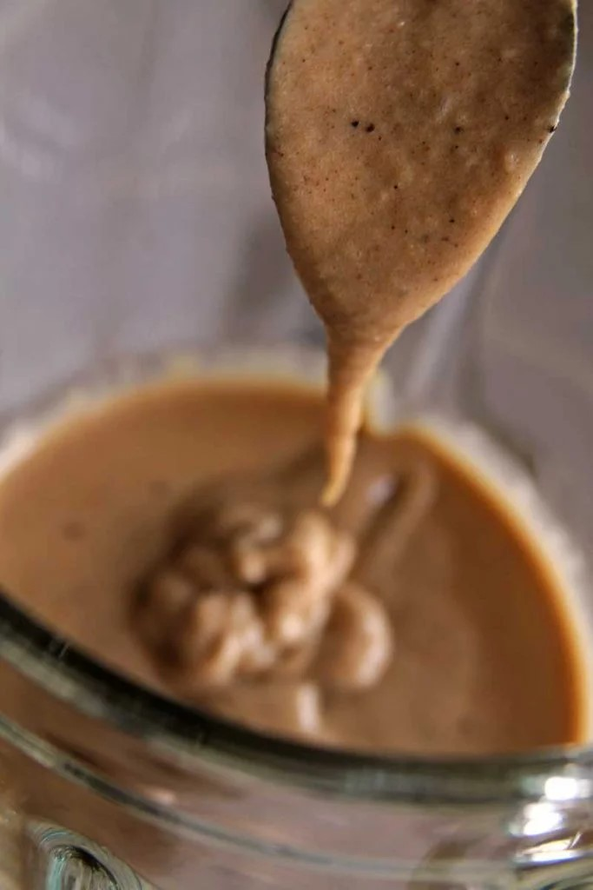
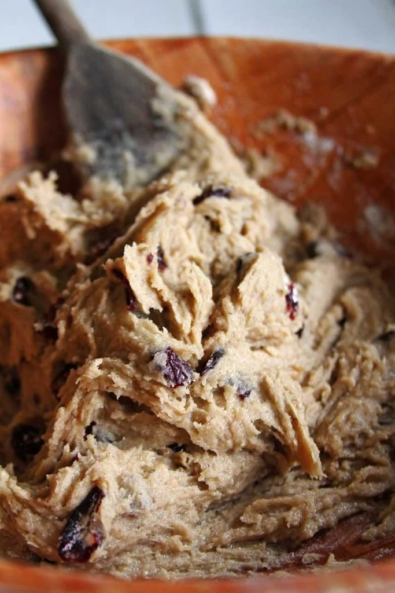
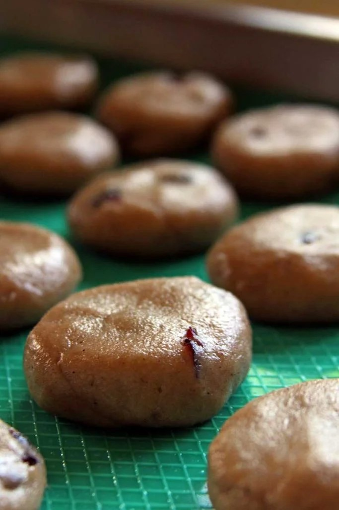

1 xícara de feijão branco cozido (não pode ser farinha de feijão branco)
1/2 xícara de óleo de coco
2 ovos inteiros
1/2 xícara de açúcar demerara (ou substitua pelo açúcar da sua preferência)
1 colher de chá de canela em pó (opcional)
1 colher de chá de pimenta síria (opcional)
1 colher de chá de gengibre em pó (opcional)
1 Pitada de sal
1/2 xícara de polvilho doce (substitua por amido de milho, fécula de batata ou araruta)
1 xícara de farinha de arroz integral
1 colheres de chá rasa de goma xantana (precisa utilizar se não a receita não dá certo)
1/2 xícara de cramberry seco (opcional – substitua por passas, damasco, ameixa, castanhas)
Na busca por opções de lanches mais saudáveis e nutritivos este biscoito doce fácil cumpre todos os requisitos e ainda incorpora um grão altamente nutritivo e proteico na nossa alimentação, o feijão branco.
NO LIQUIDIFICADOR
Adicione o feijão branco cozido, óleo de coco, os ovos, o açúcar, uma pitada de sal e aromatize como preferir, eu estou usando canela, pimenta síria e gengibre em pó, mas pode ser raspas de laranja ou limão, baunilha, erva doce ou o que você gostar mais. A massa fica grossinha e cremosa, observe a textura na foto abaixo

MISTURE OS SECOS
Em uma bacia adicione o polvilho doce, a farinha de arroz, a goma xantana e os cramberries secos (ou o sabor adicional que preferir) e misture bem com uma colher.
FINALIZE
Sobre os secos já misturados adicione a massa de feijão branco e mexa vigorosamente com uma colher de pau. Use uma colher firme pois a goma xantana fará com que a massa fique grossa e grudenta. Observe a textura na foto abaixo

REFRIGERE A MASSA
Como esta massa fica grudenta assim que é finalizada você deve levá-la para o freezer por 15 minutos ou para a geladeira por 30 minutos. Esta etapa vai facilitar a modelagem dos biscoitos.
MODELE OS BISCOITOS
Retire a massa da refrigeração, unte as mãos com um pouco de óleo, pegue aproximadamente 1 colher de sopa de massa, modele bolinhas entre as mãos e depois achate-as no formato desejado. Esta receita rende em média 20 biscoitos.
Unte as mãos sempre que necessário e se a massa começar a grudar demais, lave as mãos.
Tente deixar os cramberries dentro da massa, algumas vezes quando as frutas secas ficam muito expostas na superfície dos biscoitos, elas acabam queimando, principalmente se o forno também possuir uma fonte de calor vindo da parte superior.
Coloque os biscoitos sobre papel manteiga untado ou use um tapete de silicone untado.

ASSE OS BISCOITOS
Leve para assar em forno preaquecido à 180º C de 20-25 minutos ou até que a parte inferior esteja dourada e sua casa cheirando a biscoito fresco.
Depois de prontos deixe esfriar sobre uma grade. Se quiser você pode comê-los ainda quentes, eu não resisti e experimentei um assim que saiu do forno, como estes biscoitos não ficam crocantes depois de frios, a textura deles ainda quente é bem interessante.
ARMAZENE
Depois de completamente frios armazene em um vidro hermético por até 1 semana.
No primeiro dia os biscoitos doces ficam mais crocantes por fora, mas no segundo dia eles já ficam completamente macios. O interior é mais úmido e o exterior mais sequinho.